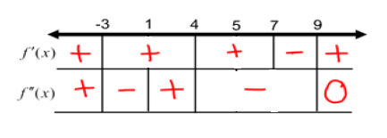
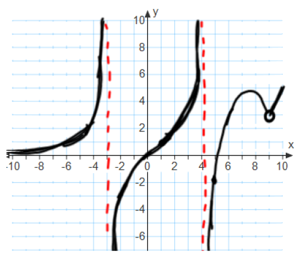

\begin{align*} \lim _{x \to - \infty } f(x) &= 0 & \lim _{x \to -3^-} f(x) &= \infty & \lim _{x \to -3^+} f(x) &= - \infty & \lim _{x \to 4^-} f(x) &= \infty \\ \lim _{x \to 4^+} f(x) &= -\infty & f(1) &= 1 & f(5) &= -2 & \lim _{x \to 9} f(x) &= 3& \\ f'(1) &\ne 0 & f'(7) &= 0 & f'(x) &= 2 \text { for } x > 9 & f''(1) &= 0 & \end{align*}
the domain of \(f\) is: \((-\infty ,-3) \cup (-3,4) \cup (4,9)\cup (9,\infty )\) and \(f\) is continuous on its domain. The following sign chart for the first and second derivatives of \(f\):

find the following:
- (a)
- Critical points.
- (b)
- Intervals where \(f\) is increasing/decreasing.
- (c)
- Local extrema.
- (d)
- Inflection points.
- (e)
- Intervals of concavity.
- (f)
- Sketch the graph of \(f\).
- (a)
- Critical points.
The critical points of \(f\) occur at points in the domain of \(f\) where either \(f'(x)=0\) or where \(f'(x)\) does not exist. Even though \(f'(-3), f'(4),\) and \(f'(9)\) do not exist, all three of those points are not in the domain of \(f\) and therefore are not critical points. We are given that \(f'(7)=0\), and so \(x=7\) is a critical point of \(f\). Therefore, \(x=7\) is the only critical point of \(f\). - (b)
- Intervals where \(f\) is increasing/decreasing.
\(f\) is increasing when \(f'(x)>0\). From the sign chart and our critical points, these are the intervals \((-\infty ,-3)\), \((-3,4)\), \((4,7)\), and \((9,\infty )\). \(f(x)\) is decreasing when \(f'(x)<0\). From the sign chart, this is on the interval \((7,9)\). - (c)
- Local extrema.
Using the first derivative test, \(f(7)\) is a local maximum because the derivative changes sign from positive to negative. So, \(x=7\) is the only local extremum of \(f\), and it is a local maximum. - (d)
- Inflection points.
Possible inflection points occur where \(f''(x)=0\) or where \(f''(x)\) does not exist. We are given that \(f''(1)=0\). In addition, \(f''(x)\) does not exist at \(x=-3,4,9\). However, these are not inflection points because \(f\) is not defined at these points. Since \(f''\) changes sign at \(x=1\), this is in fact an inflection point of \(f\). We are given that \(f(1) = 1\), and so the only inflection point of \(f\) is the point \((1,1)\). - (e)
- Intervals of concavity.
\(f(x)\) is concave up when \(f''(x)>0\). From the sign chart, this is on the intervals \((-\infty ,-3)\) and \((1,4)\). \(f(x)\) is concave down when \(f''(x)<0\). From the sign chart, this is on the interval \((-3,1)\) and \((4,9)\). - (f)
- Sketch the graph of \(f\).
